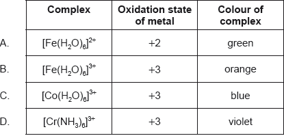

HL Paper 1
[CoCl6]3– is orange while [Co(NH3)6]3+ is yellow. Which statement is correct?
A. [CoCl6]3– absorbs orange light.
B. The oxidation state of cobalt is different in each complex.
C. The different colours are due to the different charges on the complex.
D. The different ligands cause different splitting in the 3d orbitals.
Cobalt forms the complex \({{\text{[Co(N}}{{\text{H}}_{\text{3}}}{{\text{)}}_{\text{5}}}{\text{Cl]}}^{2 + }}\). Which statements are correct for this complex?
I. The cobalt ion acts as a Lewis acid.
II. The cobalt ion has an oxidation number of +II.
III. There are 90° bond angles between the cobalt ion and the ligands.
A. I and II only
B. I and III only
C. II and III only
D. I, II and III
Which ion is colourless?
A. \({{\text{[Sc(}}{{\text{H}}_{\text{2}}}{\text{O}}{{\text{)}}_{\text{6}}}{\text{]}}^{3 + }}\)
B. \({{\text{[Cr(}}{{\text{H}}_{\text{2}}}{\text{O}}{{\text{)}}_{\text{6}}}{\text{]}}^{3 + }}\)
C. \({{\text{[Fe(}}{{\text{H}}_{\text{2}}}{\text{O}}{{\text{)}}_{\text{6}}}{\text{]}}^{3 + }}\)
D. \({{\text{[Fe(CN}}{{\text{)}}_{\text{6}}}{\text{]}}^{3 - }}\)
Which complex has the greatest d orbital splitting?

Part of the spectrochemical series is shown for transition metal complexes.
I−< Cl− < H2O < NH3
Which statement can be correctly deduced from the series?
A. H2O increases the p–d separation more than Cl−.
B. H2O increases the d–d separation more than Cl−.
C. A complex with Cl− is more likely to be blue than that with NH3.
D. Complexes with water are always blue.
What is the charge on the iron(III) complex ion in [Fe(OH)2(H2O)4]Br?
A. 0
B. 1+
C. 2+
D. 3+
What is the correct explanation for the colour of [Cu(H2O)6]2+?
A. Light is absorbed when an electron moves to a d orbital of higher energy.
B. Light is released when an electron moves to a d orbital of higher energy.
C. Light is absorbed when electrons move from the ligands to the central metal ion.
D. Light is absorbed when electrons move between d and s orbitals.
The oxidation state of cobalt in the complex ion [Co(NH3)5Br]x is +3. Which of the following statements are correct?
I. The overall charge, x, of the complex ion is 2+.
II. The complex ion is octahedral.
III. The cobalt(III) ion has a half-filled d-subshell.
A. I and II only
B. I and III only
C. II and III only
D. I, II and III
Which complex is colourless in solution?
A. \({\text{[Fe(}}{{\text{H}}_2}{\text{O}}{{\text{)}}_6}{\text{]C}}{{\text{l}}_2}\)
B. \({\text{[Ni(N}}{{\text{H}}_3}{{\text{)}}_6}{\text{]C}}{{\text{l}}_2}\)
C. \({\text{[Zn(}}{{\text{H}}_2}{\text{O}}{{\text{)}}_6}{\text{](N}}{{\text{O}}_3}{{\text{)}}_2}\)
D. \({{\text{K}}_3}[{\text{Co(CN}}{{\text{)}}_6}]\)
Ammonia is a stronger ligand than water. Which is correct when concentrated aqueous ammonia solution is added to dilute aqueous copper(II) sulfate solution?
A. The d-orbitals in the copper ion split.
B. There is a smaller splitting of the d-orbitals.
C. Ammonia replaces water as a ligand.
D. The colour of the solution fades.
Which statements are correct about the complex \({\text{[Cu(N}}{{\text{H}}_{\text{3}}}{{\text{)}}_{\text{2}}}{\text{C}}{{\text{l}}_{\text{2}}}{\text{]}}\)?
I. Oxidation state of copper is +2.
II. Ammonia is a ligand.
III. Chloride ions act as Lewis acids.
A. I and II only
B. I and III only
C. II and III only
D. I, II and III
Which species have dative covalent bonding?
I. \({\text{[Fe(}}{{\text{H}}_{\text{2}}}{\text{O}}{{\text{)}}_{\text{6}}}{\text{]C}}{{\text{l}}_{\text{3}}}\)
II. \({\text{NH}}_4^ + \)
III. \({{\text{H}}_{\text{2}}}{\text{O}}\)
A. I and II only
B. I and III only
C. II and III only
D. I, II and III
Which electron transitions are responsible for the colours of transition metal compounds?
A. Between d orbitals and s orbitals
B. Among the attached ligands
C. From the metal ion to the attached ligands
D. Between d orbitals
Which species cannot act as a ligand?
A. \({\text{NH}}_4^ + \)
B. \({{\text{H}}_{\text{2}}}{\text{O}}\)
C. \({\text{C}}{{\text{l}}^ - }\)
D. \({\text{O}}{{\text{H}}^ - }\)
Which solutions have a pH less than 7?
I. \({\text{N}}{{\text{a}}_2}{\text{C}}{{\text{O}}_3}({\text{aq)}}\)
II. \({\text{[Fe(}}{{\text{H}}_2}{\text{O}}{{\text{)}}_6}{\text{]C}}{{\text{l}}_3}{\text{(aq)}}\)
III. \({{\text{(N}}{{\text{H}}_4}{\text{)}}_2}{\text{S}}{{\text{O}}_4}{\text{(aq)}}\)
A. I and II only
B. I and III only
C. II and III only
D. I, II and III
What is the electron configuration of \({\text{S}}{{\text{n}}^{2 + }}\)?
A. \(1{{\text{s}}^2}2{{\text{s}}^2}2{{\text{p}}^6}3{{\text{s}}^2}3{{\text{p}}^6}4{{\text{s}}^2}3{{\text{d}}^{10}}4{{\text{p}}^6}5{{\text{s}}^2}4{{\text{d}}^{10}}5{{\text{p}}^2}\)
B. \(1{{\text{s}}^2}2{{\text{s}}^2}2{{\text{p}}^6}3{{\text{s}}^2}3{{\text{p}}^6}4{{\text{s}}^2}3{{\text{d}}^{10}}4{{\text{p}}^6}5{{\text{s}}^2}4{{\text{d}}^{10}}\)
C. \(1{{\text{s}}^2}2{{\text{s}}^2}2{{\text{p}}^6}3{{\text{s}}^2}3{{\text{p}}^6}4{{\text{s}}^2}3{{\text{d}}^{10}}4{{\text{p}}^6}4{{\text{d}}^{10}}5{{\text{p}}^2}\)
D. \(1{{\text{s}}^2}2{{\text{s}}^2}2{{\text{p}}^6}3{{\text{s}}^2}3{{\text{p}}^6}4{{\text{s}}^2}3{{\text{d}}^{10}}4{{\text{p}}^6}5{{\text{s}}^2}4{{\text{d}}^8}5{{\text{p}}^2}\)
Which best explains why transition metal complexes are coloured?
A. As electrons return to lower energy levels, light of a certain colour is emitted, and the complementary colour is observed.
B. As electrons return to lower energy levels, light of a certain colour is emitted, so the complex appears to have the same colour.
C. As electrons are promoted to higher energy levels, light of a certain colour is absorbed, and the complementary colour is observed.
D. As electrons are promoted to higher energy levels, light of a certain colour is absorbed, so the complex appears to have the same colour.
What is the abbreviated electron configuration of the cobalt(II) ion, \({\text{C}}{{\text{o}}^{2 + }}\)?
A. \({\text{[Ar]3}}{{\text{d}}^{\text{7}}}\)
B. \({\text{[Ar]4}}{{\text{s}}^{\text{2}}}{\text{3}}{{\text{d}}^{\text{5}}}\)
C. \({\text{[Ar]4}}{{\text{s}}^{\text{2}}}{\text{3}}{{\text{d}}^{\text{7}}}\)
D. \({\text{[Ar]4}}{{\text{s}}^{\text{1}}}{\text{3}}{{\text{d}}^{\text{6}}}\)
Ligands can form dative covalent bonds with metal ions to form complex ions. Which of the following can act as a ligand?
I. \({\text{C}}{{\text{l}}^ - }\)
II. \({\text{N}}{{\text{H}}_{\text{3}}}\)
III. \({{\text{H}}_{\text{2}}}{\text{O}}\)
A. I and II only
B. I and III only
C. II and III only
D. I, II and III
Which metal nitrate solution is coloured?
A. \({\text{Zn(N}}{{\text{O}}_{\text{3}}}{{\text{)}}_{\text{2}}}{\text{(aq)}}\)
B. \({\text{Ni(N}}{{\text{O}}_{\text{3}}}{{\text{)}}_{\text{2}}}{\text{(aq)}}\)
C. \({\text{Mg(N}}{{\text{O}}_{\text{3}}}{{\text{)}}_{\text{2}}}{\text{(aq)}}\)
D. \({\text{Sc(N}}{{\text{O}}_{\text{3}}}{{\text{)}}_{\text{3}}}{\text{(aq)}}\)
Which process is responsible for the colour of a transition metal complex?
A. The absorption of light when electrons move between s orbitals and d orbitals
B. The emission of light when electrons move between s orbitals and d orbitals
C. The absorption of light when electrons move between different d orbitals
D. The emission of light when electrons move between different d orbitals
In which complexes does iron have an oxidation number of \( + 3\)?
I. \({{\text{[Fe(}}{{\text{H}}_2}{\text{O}}{{\text{)}}_6}{\text{]}}^{3 + }}\)
II. \({{\text{[Fe(}}{{\text{H}}_2}{\text{O}}{{\text{)}}_5}{\text{(CN)]}}^{2 + }}\)
III. \({{\text{[Fe(CN}}{{\text{)}}_6}{\text{]}}^{3 - }}\)
A. I and II only
B. I and III only
C. II and III only
D. I, II and III
Which compound is likely to be colourless?
A. \({\text{[Zn(}}{{\text{H}}_{\text{2}}}{\text{O}}{{\text{)}}_{\text{6}}}{\text{]C}}{{\text{l}}_{\text{2}}}\)
B. \({{\text{[N}}{{\text{H}}_{\text{4}}}{\text{]}}_{\text{2}}}{\text{[Fe(}}{{\text{H}}_{\text{2}}}{\text{O}}{{\text{)}}_{\text{6}}}{\text{][S}}{{\text{O}}_{\text{4}}}{{\text{]}}_{\text{2}}}\)
C. \({{\text{K}}_{\text{3}}}{\text{[Co(CN}}{{\text{)}}_{\text{6}}}{\text{]}}\)
D. \({\text{[Ni(N}}{{\text{H}}_{\text{3}}}{{\text{)}}_{\text{6}}}{\text{][B}}{{\text{F}}_{\text{4}}}{{\text{]}}_{\text{2}}}\)